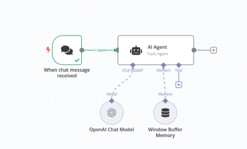
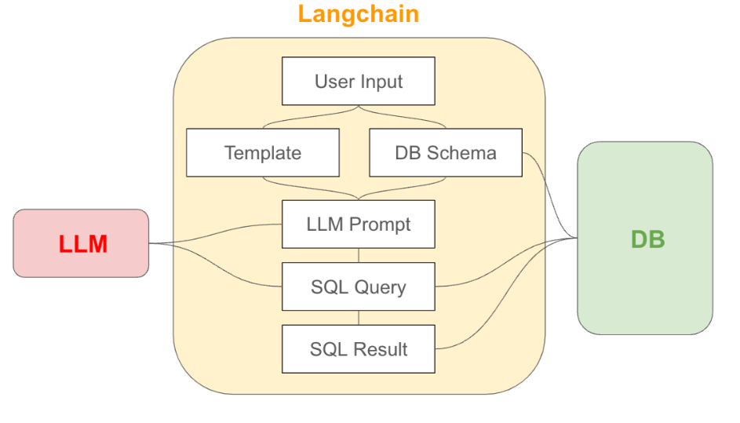
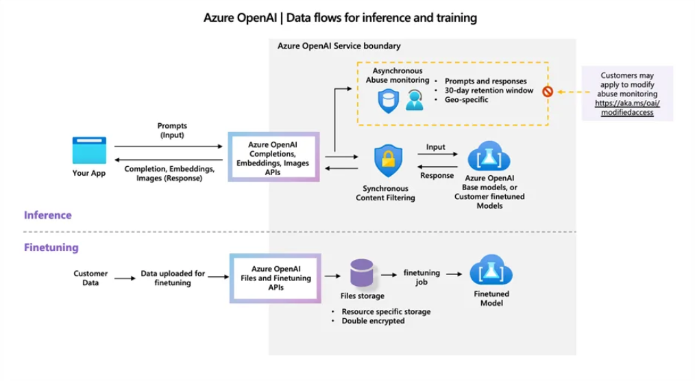

Expertise in CI/CD automation, cloud-native architecture on Azure, and advanced AI pipelines using Lang Chain,
RAG frameworks, and vector search.
Focused on scalable engineering, AI-driven insights, and building high-impact automation that boosts
productivity across DevOps and cloud environments.
GenAI & DevOps Engineer with expertise in CI/CD automation, cloud-native architecture on Azure, and advanced AI
pipelines using Lang Chain, RAG frameworks, and vector search.
Skilled in orchestrating end-to-end automation with n8n, building backend systems with Django, and delivering
data/ML solutions including OCR, analytics, and model deployment.
Focused on scalable engineering, AI-driven insights, and building high-impact automation that boosts productivity
across DevOps and cloud environments.
Working on Sodexo Data Hub Platform as GenAI & DevOps engineer, managing Azure resources including Function
Apps, Storage Accounts, App Service Plans, and cloud migrations.
Deployed n8n workflow containers from ACR to Azure Container Apps, building AI agents to automate backend
workflows, APIs, and webhooks, reducing dependency on Function Apps and App Services.
Developed POC Entegra Agentic OCR project to automatically extract invoice data, perform supplier web
scraping, and structure data for ML models, predictions, and analytics.
Built CDM and interactive dashboards using Streamlit, integrating extracted data into structured formats for
business insights and predictive analytics.
Designed and implemented Azure DevOps + n8n automation pipelines powering an AI-driven DevOps Insights
Assistant to optimize cloud operations, cost, and engineering productivity.
DevOps Engineer
Sodexo
October 2024 – March 2025
Streamlined cloud IAC (Infrastructure as code) deployments and ensured smooth CI/CD operations using Azure
DevOps. Responsibilities included creating robust YAML pipelines and writing efficient PowerShell scripts to
automate deployment processes. Leveraging Bicep templates to ensure all parameters were dynamically fetched
from Azure Resource Groups.
Coordinated code reviews and post-approval actions to maintain high standards in code quality. efficiently
managed and executed CI/CD pipelines for critical components such as Key Vaults, App Services, Function Apps,
Databricks, Storage Accounts, and Data Factories within Azure.
Secured pipeline approvals, deploying components, and maintaining comprehensive documentation to foster
transparency and collaboration.
Contributed to operational excellence, minimized deployment errors, and optimized resource utilization,
highlighting expertise in cloud automation, infrastructure-as-code, and end-to-end deployment lifecycle
management.
DevOps Engineer
Console IT Solutions
Jan 2024 - Sep 2024
Designed and managed Azure cloud infrastructure, deploying and configuring virtual networks, subnets,
firewalls, and VPN gateways for secure connectivity.
Implemented and optimized network performance across Azure environments, including routing, load balancing,
and hybrid connectivity setups (VPN/ExpressRoute).
Supported cloud-based workloads by monitoring, troubleshooting, and maintaining high-availability network
and security configurations.
System Engineer
Teleperformance
May 2021 - Oct 2022
Designed, implemented, and maintained Azure-based network architectures supporting communication across
cloud workloads, including virtual networks, VNets peering.
Ensured high network performance by configuring and optimizing Azure routing, load balancers, NSGs,
application gateways, and secure hybrid connectivity.
Education
MASTER OF SCIENCE (MSc)
PARIS SCHOOL OF BUSINESS, PARIS
2023 – 2024
BACHELOR OF ENGINEERING (Computer Science)
INDIA
2017 – 2021
Certifications
Microsoft Azure Data Engineer Associate – Databricks
Microsoft Azure Network Engineer – AZ-700
Microsoft Azure AI Engineer Associate – AI-700
Coursera: AI For Everyone – Andrew Ng (Free Audit)
edX: Introduction to DevOps: Transforming and Improving Operations (Free Audit)
Hugging Face: Transformers Course (Free)
Projects
n8n Container Automation
Deployed n8n in Azure Container Apps; built AI agents replacing Function Apps and App Services for backend
workflows and APIs.
Entegra OCR Invoice Extraction
Automated invoice data extraction, supplier web scraping, and structured DB creation for ML models and
analytics.
Azure DevOps & Cloud Management
Managed Function Apps, Storage, App Service Plans, and cloud migrations; implemented CI/CD pipelines and n8n
automation.
CDM & Dashboards
Built Common Data Model with Streamlit for data visualization and predictive analytics.
Youtube Clone
Deployed a fully functional YouTube clone into an Azure Resource Group. Hosted the application using Azure App
Services, ensuring scalability and high availability. Storage Integration: Configured Azure Blob Storage for
efficient media handling. Database Management: Deployed an Azure SQL Database for structured and reliable data
storage. Networking: Utilized Azure Application Gateway for secure and optimized traffic distribution. CI/CD
Pipeline: Implemented a streamlined deployment process via GitHub Actions, enabling seamless code updates.
This project was a great opportunity to dive deeper into Azure's ecosystem while working with modern web
technologies. It's exciting to see everything come together in a cloud-native environment!
Sales Data Predictions
Implemented a machine learning model in Python to analyze and predict sales trends
based on historical data, offering actionable business insights.
API Testing with Gradio and Frontends
Tested Gen AI, OpenAI, and Assembly APIs across Gradio and various frontend platforms. Validated functionality
locally and on hosted platforms. Overcame real-time CORS origin issues and ensured smooth integrations for
both frontend (GitHub) and backend (Render).
Speech-to-Text Converter
Developed a Python-based application to convert audio inputs into accurate text
outputs using advanced speech recognition techniques.
AI Chatbot
A chatbot built using HTML, CSS, JavaScript for the frontend and Python for
backend logic, leveraging Generative AI APIs for intelligent and interactive conversations.
Text Generator from Video
Using Assembly AI, Python can easily convert video content into text by first
extracting the audio from the video using libraries like moviepy. After extracting the audio, the requests
library is used to send the audio file to Assembly AI’s API for transcription. Assembly AI processes the audio
and returns the transcribed text in a few seconds. This allows seamless integration of speech-to-text
capabilities for various applications like video captioning and content analysis. With Assembly AI, the
transcription process is accurate, fast, and scalable for large volumes of video data.

Smart Incident Triage System (End-to-End Automation with LLM +
n8n + ADF + Power BI)
Description: Build an automated system that listens to logs or alerts (e.g., from
Azure Monitor/Grafana), classifies the incident type using an LLM, and triggers workflows in n8n to create
tickets in SoUnified or Jira. It also fetches related pipeline status from ADF, logs root cause summaries, and
visualizes incident trends in Power BI.
Skills Used: GenAI, n8n, Azure DevOps, ADF, REST APIs, Power BI, CI/CD.

LLM-Powered SQL Chatbot for Real-Time Project Metrics
Description: Create a chatbot that connects to your SQL Server database (used for
commit tracking, productivity metrics, etc.), interprets natural language queries, and generates SQL
dynamically using an LLM (e.g., OpenAI). Deploy it as a web app with a frontend in HTML/CSS/JS and a Python
backend.
Skills Used: SQL, Python, OpenAI API, HTML/JS, Azure App Service, DevOps pipelines.

Generative AI Knowledge Base from SharePoint & Markdown Sources
Description: Automatically extract content from .docx, PDFs, or Markdown stored in
SharePoint, summarize them using LLMs, and organize them into a searchable knowledge base UI. Implement
semantic search using vector embeddings, deployed via Azure or Streamlit.
Skills Used: Python, LangChain/OpenAI, Azure Cognitive Search, Streamlit, Git integration.
Object Identification
Real-time object detection system built with machine learning models and camera
integration, providing seamless recognition capabilities using Python.